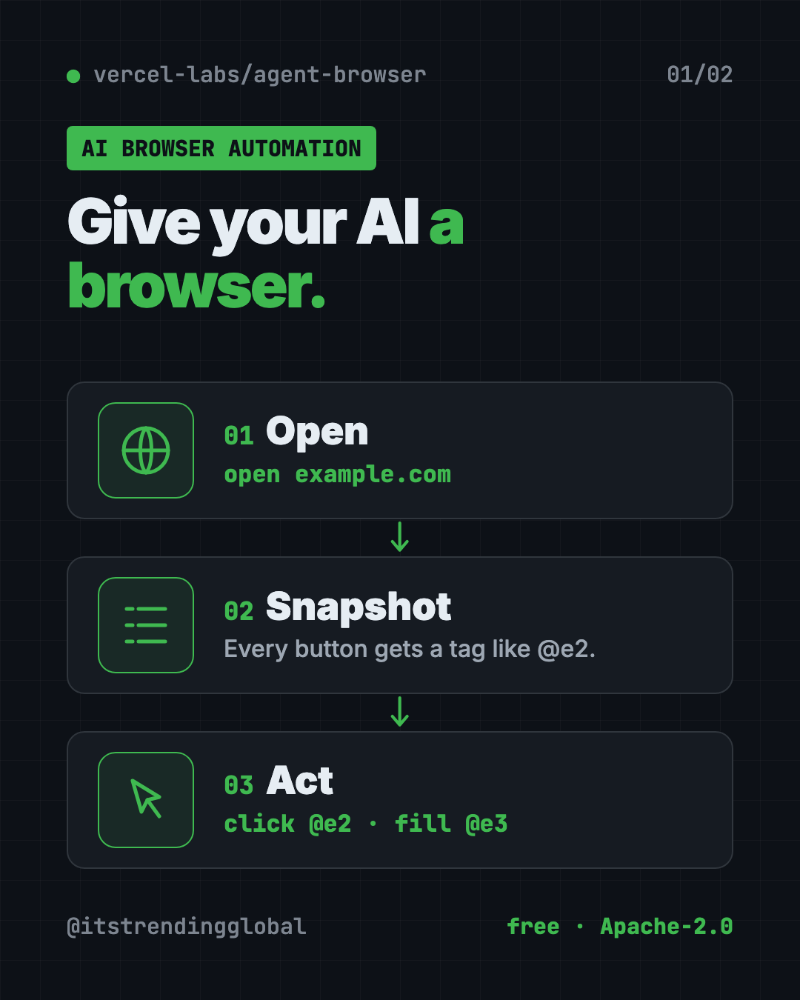
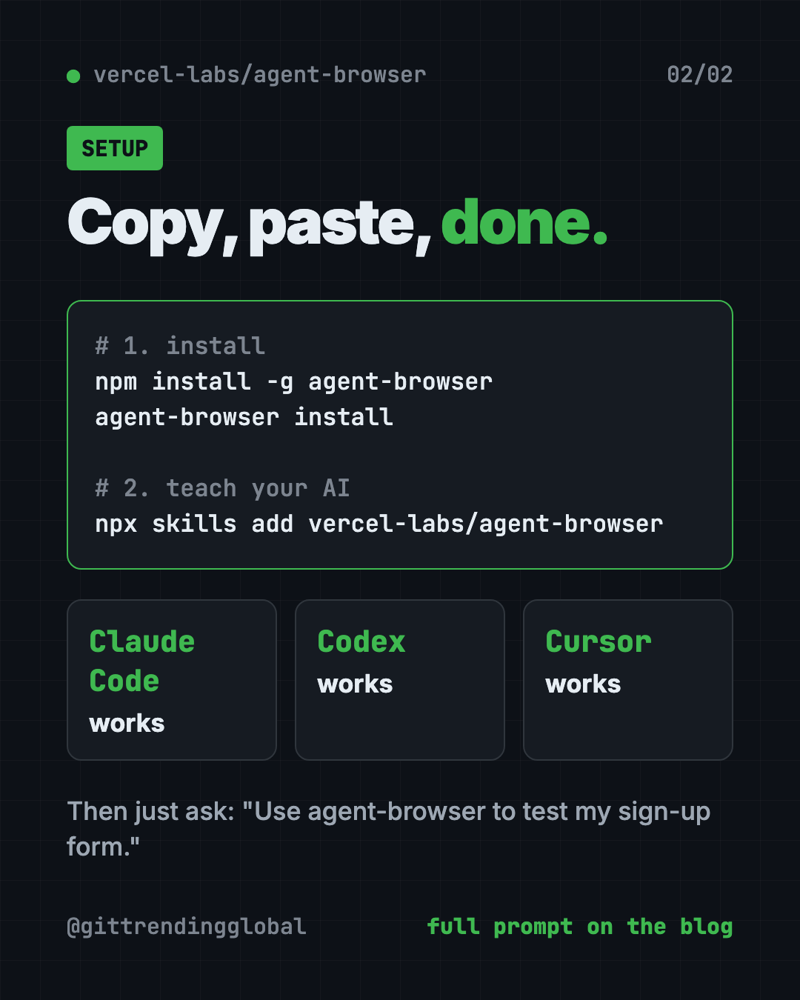

agent-browser: Free AI Browser Automation Tool by Vercel
- Published 15 Oct 2026
- Updated 16 Oct 2026
- 8 min read
- License Apache-2.0
- By the ITG Now team
agent-browser is a free AI browser automation tool from Vercel Labs. It gives AI helpers like Claude Code and Codex their own web browser, so they can open a site, click buttons, fill forms and read pages for you.
Without it, you end up as the middle person. You open the site, copy what you see, paste it to the AI, and repeat. This guide shows what agent-browser does, real ways to use it, and how to set it up in a few minutes.
Key takeaways
- Free and open source under the Apache-2.0 license, from Vercel Labs.
- Built for AI helpers. Works with Claude Code, Codex, Cursor, Gemini CLI, GitHub Copilot, Goose, OpenCode and Windsurf.
- Two install lines. One installs the tool, one downloads a copy of Chrome for it to drive.
- Safety switches built in, like a list of allowed websites and "ask me first" for risky actions.
- Mac, Windows and Linux. About 44K people have starred it on GitHub.
What is agent-browser?
agent-browser is a small program you run from the command line, the text window where you type instructions. The README (the project's main instructions page) calls it a "browser automation CLI for AI agents."
Here is the plain version. AI coding helpers are good at writing code. But many can't look at a live website. agent-browser fixes that. The AI types simple commands like "open this page" or "click that button," and agent-browser does it in a real Chrome browser.
It is made by Vercel Labs, part of Vercel, a well-known web hosting company. It is written in Rust, a programming language known for speed.
How does agent-browser work?
The trick is a "snapshot." Instead of staring at a screenshot, the AI asks for a tidy list of what is on the page. Each button and box gets a short tag, like @e2.
- Open. The AI opens a page:
agent-browser open example.com. - Snapshot. It gets a list of everything clickable, each with a tag.
- Act. It clicks or types using the tag, like
click @e2orfill @e3 "hello". - Check again. After the page changes, it takes a fresh snapshot.
This list-based approach lets the AI find the right button without guessing from pixels.

How to use agent-browser (real examples)
You don't type these commands yourself. You ask your AI helper in plain words, and it runs them.
- Test your own sign-up form. "Use agent-browser to test the sign-up flow on my site and tell me what breaks." The README uses this exact kind of request as its example.
- Read a long article for you. The
readcommand grabs a page as clean text without even opening Chrome. Ask the AI to summarize it. - Check your site on an iPhone. On a Mac with Xcode, it can drive real Mobile Safari in the iPhone simulator.
- Take proof screenshots. Ask for a full-page screenshot of your homepage after each change.
- Watch what the AI is doing. A local dashboard shows a live view of the browser and every command, so nothing happens out of sight.
💡 Tip: Want to watch it work? Ask your AI helper to add
--headedwhen it opens a page. That shows a real browser window instead of a hidden one.
Is agent-browser free?
Yes. agent-browser is free and open source under the Apache-2.0 license. There is no paid plan in the README.
You still pay for whatever AI helper you use with it, like a Claude or ChatGPT plan. agent-browser itself costs nothing.
Is agent-browser safe?
It can click and type on real websites, so the safety tools matter. All of them are opt-in, which means you or your AI turns them on. The README lists:
- Allowed sites list. Keep the browser on websites you trust, like only your own site.
- Ask before risky steps. Make it ask for your approval before things like downloads.
- Password vault. Save a login once, encrypted on your computer. The README says "the LLM never sees passwords."
- Content markers. Clearly separate page text from the AI's own instructions, so a sneaky web page is easier to spot.
- Output limits. Stop a giant page from flooding the AI.
⚠️ Heads up: A browser that is logged in as you can act as you. Start with test sites or your own site, and turn on the allowed-sites list before pointing it at accounts that matter.
The browser also shuts itself down after one hour with no commands, so it doesn't run forever in the background.
How to install agent-browser
You need Node.js (a free tool that runs JavaScript programs) for the npm way. Open Terminal (Mac or Linux) or PowerShell (Windows).
Copy and paste this:
npm install -g agent-browser
agent-browser install
The first line installs the tool. The second downloads Chrome for Testing, Google's official browser for automation. If you already have Chrome or Brave, the README says it finds them automatically.
On a Mac with Homebrew (a free app installer), copy and paste this instead:
brew install agent-browser
agent-browser install
On Linux, add the system pieces Chrome needs. Copy and paste this:
agent-browser install --with-deps
Then teach your AI helper how to use it. Copy and paste this:
npx skills add vercel-labs/agent-browser
That adds a "skill," a short instruction file your AI helper reads. It works with Claude Code, Codex, Cursor and the others listed above.
Try a quick test. Copy and paste this:
agent-browser open example.com
agent-browser snapshot
agent-browser close
Something not working? Copy and paste this to check your setup:
agent-browser doctor
To update later, run agent-browser upgrade.
Let Claude or Codex set it up for you
Claude Code and OpenAI Codex are AI helpers that can run setup steps on your computer. You paste a request, it explains each step, and you approve it.
Copy and paste this:
Please set up agent-browser (github.com/vercel-labs/agent-browser) so you can use a web browser.
1. Check if I have Node.js. If not, tell me how to install it.
2. Run "npm install -g agent-browser" and "agent-browser install".
3. Add the skill with "npx skills add vercel-labs/agent-browser".
4. Open example.com, take a snapshot, and show me it works.
Explain each step before you run it.
Then try asking:
Use agent-browser to open my website and check every link on the homepage works.
Use agent-browser with --headed to fill in my contact form with test data, but don't press submit.
Read this article with agent-browser and give me a 5-bullet summary: <link>

agent-browser at a glance
| Price | Free |
| Works offline | Runs on your computer; websites still need internet |
| Platforms | Mac (Apple and Intel), Windows, Linux |
| License | Apache-2.0 (open source) |
| Made by | Vercel Labs |
| GitHub stars | About 44K |
| Best for | People using AI coding helpers who need them to see and test websites |
Who should use agent-browser?
- People building websites with AI who want the AI to check its own work.
- Small business owners who want an AI to test their online forms and checkout.
- Testers who want quick automated checks without writing long test scripts.
- Anyone using Claude Code or Codex for research across many web pages.
If you never use an AI coding helper, this tool isn't for you yet.
Our take
agent-browser is one of the cleanest ways to give an AI helper eyes and hands on the web. The snapshot-and-tag idea is simple and works well with how AI thinks.
What we like:
- Free, open source and backed by Vercel Labs.
- Two-line install, plus a skill so your AI knows how to use it.
- Real safety options: allowed sites, approvals, encrypted logins.
- A live dashboard so you can watch what the AI does.
- Works on Mac, Windows and Linux.
What to watch for:
- It is a command-line tool. You mostly use it through an AI helper.
- Safety features are off until you turn them on.
- Letting an AI act in logged-in accounts needs care.
- The README is long and technical. Let your AI read it for you.
Building your AI coding setup? See gstack, Y Combinator's CEO's AI coding setup, Superpowers, which makes your AI plan first, and Moli, a light browser built for AI helpers.
FAQ
What is AI browser automation?
It means an AI helper controls a web browser for you. It opens pages, clicks buttons, fills forms and reads text, the way you would by hand.
Is agent-browser free?
Yes. agent-browser is free and open source under Apache-2.0. You only pay for the AI helper you use with it.
Does agent-browser work with Claude Code?
Yes. Run npx skills add vercel-labs/agent-browser and Claude Code learns how to use it. Codex, Cursor and Gemini CLI work too.
Do I need to know how to code to use agent-browser?
Not much. You need to paste a couple of install commands. After that, you ask your AI helper in plain English.
Does agent-browser work on Windows?
Yes. The README lists native builds for Windows, Mac (Apple and Intel chips) and Linux.
Can agent-browser see my passwords?
It has an encrypted password vault, and the README says the AI never sees saved passwords. Still, only let it log in to accounts you're comfortable with.
Get agent-browser: github.com/vercel-labs/agent-browser
More free coding tools
- Hindsight Hindsight is free, open-source AI agent memory. It helps AI helpers remember past chats and learn from them. Works with Claude Code, Codex and 60+ tools.
- Ponytail Skill The Ponytail skill is one free prompt that makes your AI coding helper reuse what exists, write half the code, and still keep the tests and safety checks.
- Understand Anything Understand Anything is a free plugin that lets you visualize any codebase as a clickable map with plain-English notes, guided tours and a chat for questions.
- Matt Pocock Skills Matt Pocock skills are free add-ons that make Claude Code, Codex and Copilot ask better questions, test their work and keep your code tidy.
- CodeGraph for Claude Code CodeGraph for Claude Code builds a local map of your code, so your AI helper finds the right files in one step. Free, MIT licensed, runs on your computer.
- Karpathy Skills for Claude Code Karpathy skills for Claude Code is one free rules file that makes your AI coder ask first, keep code simple and only change what you asked for.
Latest AI news
- Meta gives away its big Muse Spark AI for free
- Chip startup Tenstorrent raises $1.5B at $6.2B value
- Ex-OpenAI engineer in bugging case held as flight risk
- US bars DeepSeek from civilian government agency systems
Keep reading

REA: Reverse Engineer Anything With Your AI Agent
REA (Reverse Engineer Anything) lets an AI agent look inside an app and explain how a feature works, with proof. What it does, what it misses, and the risks.

DBX: Free Database Client for 100+ Databases, With AI
DBX is a free database client that opens 100+ kinds of databases in a 25 MB app. Its AI helper turns plain English into database queries for you.

PureMac: Free CleanMyMac Alternative, No Subscription
PureMac is a free CleanMyMac alternative. It clears junk, fully uninstalls apps and finds duplicates, with no subscription, no tracking and no scare tactics.